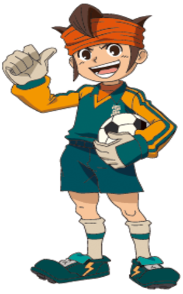
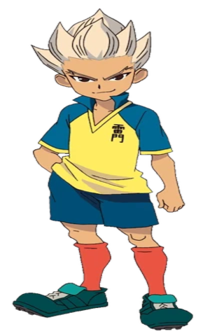
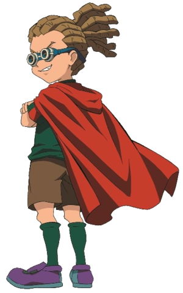
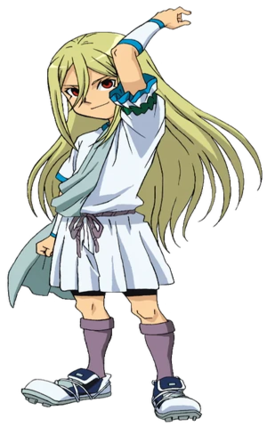
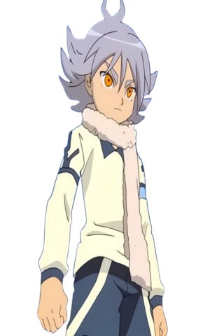

Inazuma Eleven é originalmente uma saga de jogos que posteriormente veio a se tornar anime, se passa em
uma
dimensão na qual o futebol não é um esporte normal, alem disso os confrontos dos protagonistas vão de
batalhas contra Deuses à batalhas extra planetarias contra aliens.
Endou Mamoru

O protagonista da série, Endou é o goleiro e capitão do time Raimon. Conhecido por seu
otimismo
inabalável e espírito de liderança, ele é movido por sua paixão pelo futebol e pelo legado de seu avô.
Sempre pronto para encorajar seus companheiros, Endou é o coração da equipe e famoso por suas defesas
espetaculares, como a "Mão Fantasma".
Shuuya Gouenji

Um dos atacantes mais poderosos da série, Gouenji é calmo, sério e extremamente talentoso.
Inicialmente
relutante em voltar ao futebol por motivos pessoais, ele retorna como peça-chave da Raimon. Seu chute
especial, o "Tornado de Fogo", é lendário, e sua presença inspira respeito.
Kidou Yuuto

Estrategista brilhante e ex-capitão da equipe da Teikoku Gakuen, Kidou é conhecido por sua
inteligência
tática e habilidades como meio-campista. Usa uma bandana que simboliza sua conexão com seu irmão
adotivo. Frio e calculista no começo, ele se torna um aliado valioso da Raimon.
Afuro Terumi

Aphrodi é um jogador elegante e quase celestial, conhecido por seu estilo refinado e chute
especial "Deus
Knows". Com aparência andrógina e comportamento sereno, ele joga pela equipe Zeus. Apesar de
inicialmente rival, demonstra ter um forte senso de justiça e respeito pelo futebol verdadeiro.
Fubuki Shirou

Um jogador com uma história trágica, Fubuki é tanto atacante quanto defensor. Após perder
seu irmão gêmeo
Atsuya, ele desenvolve uma segunda personalidade, alternando entre o calmo Shirou e o agressivo Atsuya.
Seu chute mais famoso é o "Tempestade de Gelo". Ele representa a luta interna e superação pessoal.